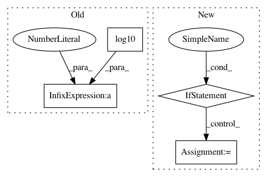

5196910e726c04648f5cffae5f50ecd3171539ce,neurodsp/plts/filt.py,,plot_frequency_response,#,11
Before Change
// Plot frequency response
plt.figure(figsize=(10, 5))
plt.subplot(1, 2, 1)
plt.plot(w_vals * fs / (2. * np.pi), 20 * np.log10(abs(h_vals)), "k")
plt.title("Frequency response")
plt.ylabel("Attenuation (dB)")
plt.xlabel("Frequency (Hz)")
After Change
Figure axes upon which to plot.
if not ax:
_, ax = plt.subplots(figsize=(5, 5))
ax.plot(f_db, db, "k")
ax.set_title("Frequency response")
ax.set_xlabel("Frequency (Hz)")
In pattern: SUPERPATTERN
Frequency: 3
Non-data size: 4
Instances
Project Name: neurodsp-tools/neurodsp
Commit Name: 5196910e726c04648f5cffae5f50ecd3171539ce
Time: 2019-03-17
Author: tdonoghue@ucsd.edu
File Name: neurodsp/plts/filt.py
Class Name:
Method Name: plot_frequency_response
Project Name: interactiveaudiolab/nussl
Commit Name: 67416766b03c0e93f864fcb58509b14aefd93e41
Time: 2019-06-20
Author: prem@u.northwestern.edu
File Name: nussl/separation/clustering/clustering_separation_base.py
Class Name: ClusteringSeparationBase
Method Name: plot
Project Name: suavecode/SUAVE
Commit Name: 0623ff0490b7558791a2f15f391fc47e8de2ed0f
Time: 2016-02-02
Author: jmvegh@stanford.edu
File Name: trunk/SUAVE/Methods/Power/Battery/Sizing/initialize_from_energy_and_power.py
Class Name:
Method Name: initialize_from_energy_and_power